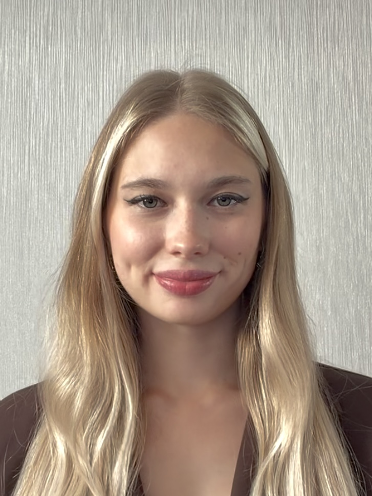

Кораблева Даниела Михайловна
ФГБОУ ВО «Кубанский Государственный Университет»
Факультет компьютерных технологий и прикладной математики
Кафедра информационных технологий
Направление подготовки: 01.04.02 Прикладная математика и информатика (Технологии программирования и разработки информационно-коммуникационных систем)
Биография
Тема выпускной работы
«Система бесконтактного управления интерфейсом с персонализацией жестовых команд»
Научный руководитель: Лукащик Елена Павловна, канд. физ.-мат. наук, доц.
О себе
Средний балл в период обучения в университете — 4.875. Имею опыт работы с современными языками программирования: 1С, C#, С++, Python, Java. Есть знания языка SQL. Опыт работы с СУБД PostgreSQL. Увлекаюсь комьютерным зрением.
Краткая биография
Родилась 24 августа 2003 года. Обучалась в Муниципальном автономном общеобразовательном учреждении муниципального образования города Краснодара средней общеобразовательной школе №84 имени Героя Российской Федерации Яцкова Игоря Владимировича. В 2019 получила аттестат с отличием об основном общем образовании. В 2021 окончила среднее общее образование с отличием и золотой медалью.
В 2025 году получила красный диплом бакалавра по направлению «Прикладная математика и информатика» и продолжила обучение в магистратуре КубГУ.
Профессиональные навыки
- 1С-разработка: Платформа «1С:Предприятие 8.3» (Конфигуратор); разработка и модификация документов, справочников, регистров; Работа с консолью запросов;
- Языки программирования: : 1С, C#, С++, Python, Java
- Базы данных и SQL: Знания языка SQL. Опыт работы с СУБД PostgreSQL
- CI/CD и DevOps: GitHub
- Инструменты проектирования: Моделирование архитектуры и схем данных в Drow.io, StarUML
- Среды разработки: Конфигуратор Платформы «1С:Предприятие 8.3»(1C) , Visual Studio (C#/C++), PyCharm (Python), NetBeans (Java)
- Знание иностранных языков: Английский (А1-начальный)
Достижения
- В 2024 году получила свидетельство о государственной регистрации программы для ЭВМ: «Программный модуль для распознания объектов, расположенных в области пешеходного перехода»
- В 2025 году стала победителем конкурса на получение стипендии Правительства Российской Федерации для студентов, курсантов и слушателей, обучающихся по образовательным программам высшего образования за достижения в области образования и значительный вклад в науку
- В 2025 году стала «Студентом года» в номинации «Доброволец года»
- Автор 3 научных публикаций